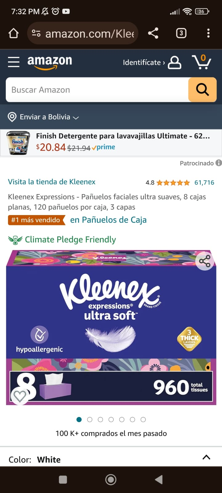

Hick's Law
Amazon
Amazon.com On this web page can be seen that the stimuli are reduced as much as possible, so it's easier for the customer to make a decision, what is could in Hick's Law the reaction time.
White Space and Clean Design
McDonalds
mcdonalds.comIn this web page the white space is used so the customer can focus on the Happy Meal and also micro white spaces are used to make the text more readable.
Fitt's Law
Adidas
adidas.com
On this page the options are put close to each other so it's easier for the customer to click on one of the options. Also, the "add to bag" button is big enough to be difficult to miss